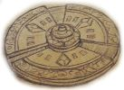
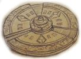

Translokator (ang. Translocator) to jeden z pięciu artefaktów służących jako klucze do Więzienia Demonów – Zzyzxu. Artefakt ten zapewnia kontrolę nad przestrzenią, umożliwiając teleportację do miejsc, w których jego użytkownik już wcześniej przebywał.
 

Pierwotnie Translokator był ukryty w kluczu prowadzącym do Kamienia Snów, znajdującym się w Obsydianowym Pustkowiu. Patton Burgess odnalazł artefakt i przeniósł go do smoczej świątyni w Gadziej Opoce, w Smoczym Azylu. Sama konstrukcja klucza, w którym spoczywał artefakt, przypominała rosyjską matrioszkę – wewnątrz każdego większego klucza znajdował się mniejszy. Na końcu, po włożeniu ostatniego klucza do właściwego zamka, pojawiał się Translokator.